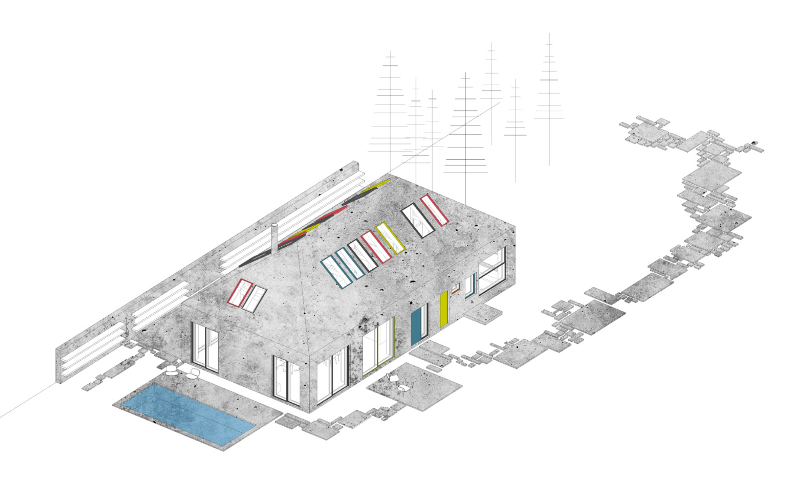
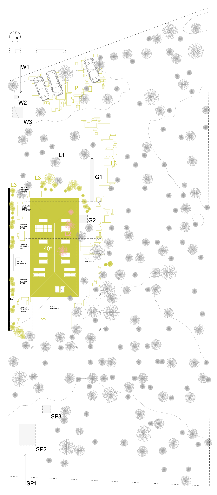
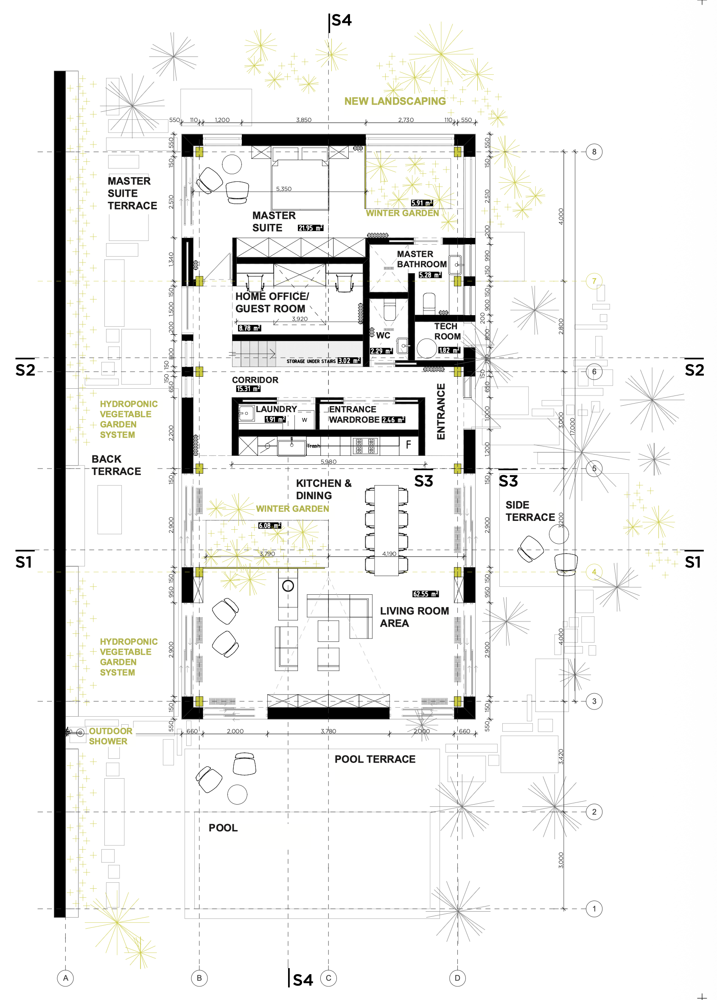
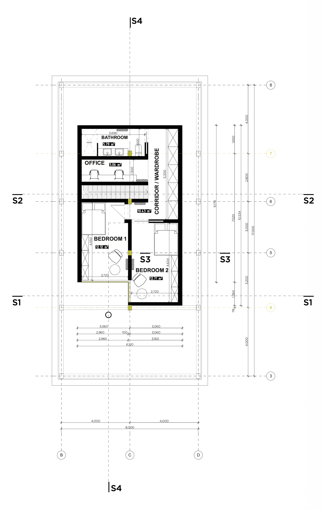
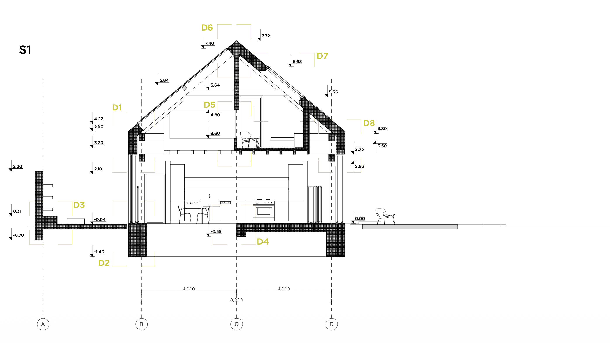
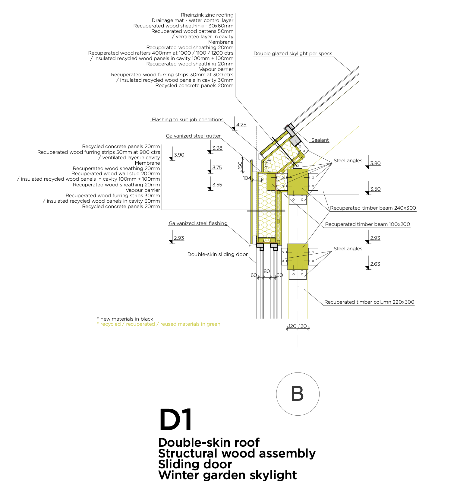
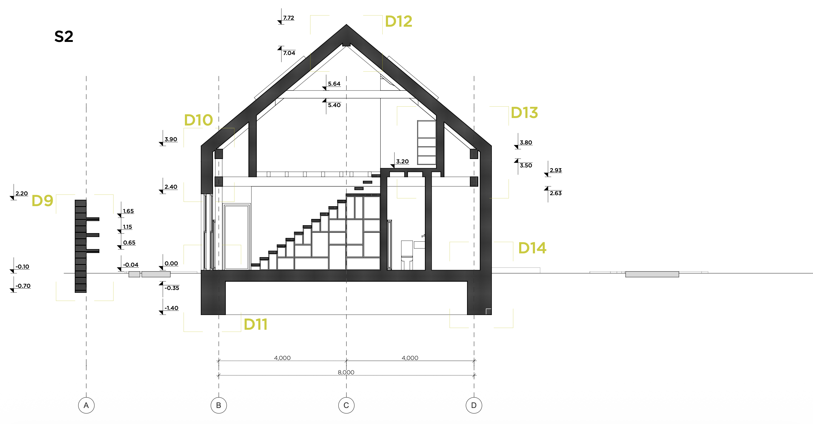
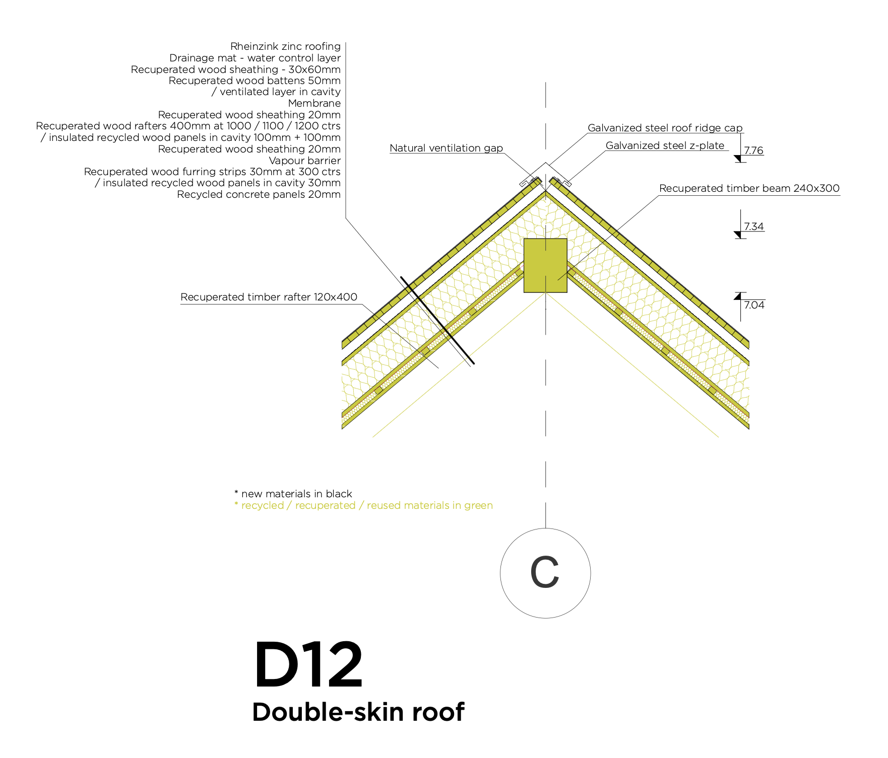
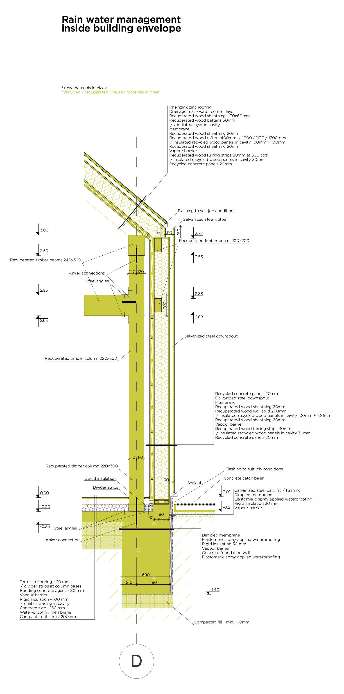
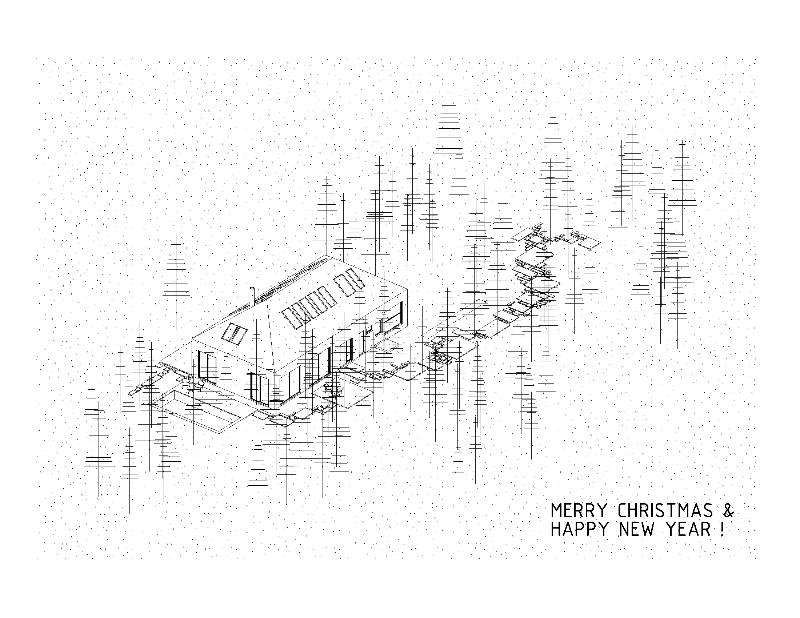

Poltava pine forests

The house is oriented on inside - family, slow lifestyle - and outside - forest, preservation of landscape, living in harmony with nature, minimal environmental footprint. The design provides a spacious but compact space for 4 members family with natural ventilation, heating and cooling through inner gardens. The design adapts recycling and reusing of reclaimed materials and construction and demolision waste (CDW) to reduce the environmental impact. The possibility to use salvaged windows, doors and glazing systems is harmoniously implemented into minimal and ascetic design, both inside and outside, as well as into resilient architectural assembly. The house is located in the old pine forest that allows very little light to come through. The maximum amount of existing trees have been preserved. Dark building envelope secures light absorption and reduces heating through cold winter months. At the same time, the house is protected from the summer heat by the tall pine forest. Vertical vegetable garden is located in the most exposed to the sun area.
INTEGRATION OF THE BUILDING INTO LANDSCAPE / PRESERVATION OF THE LANDSCAPE:

SITE PLAN & ROOF PLAN
P - Parking spot for 2-3 vehicles
W1 - Access to water tank pump and water storage tank
W2 - Water pump
W3 - Water storage tank
L1 - Existing landscape and greenery
L2 - Sacrificed landscape
L3 - New landscaping
L4 - Hydroponic vertical vegetable garden
G1 - Geothermal field
G2 - Geothermal pump and well
SP1 - Access to septic system
SP2 - Septic field
SP3 - Septic pump
GROUND FLOOR PLAN. SCALE 1 : 150

S2ND FLOOR PLAN> SCALE 1 : 150

SECTION 1-1. SCALE 1 : 150

DETAIL 1. SCALE 1 : 50

SECTION 2-2. SCALE 1:150

DETAIL 12. SCALE 1 : 50

SECTION 3-3. SCALE 1 : 50

VIEW DONE AS A POSTCARD

designed & built by masha vakula